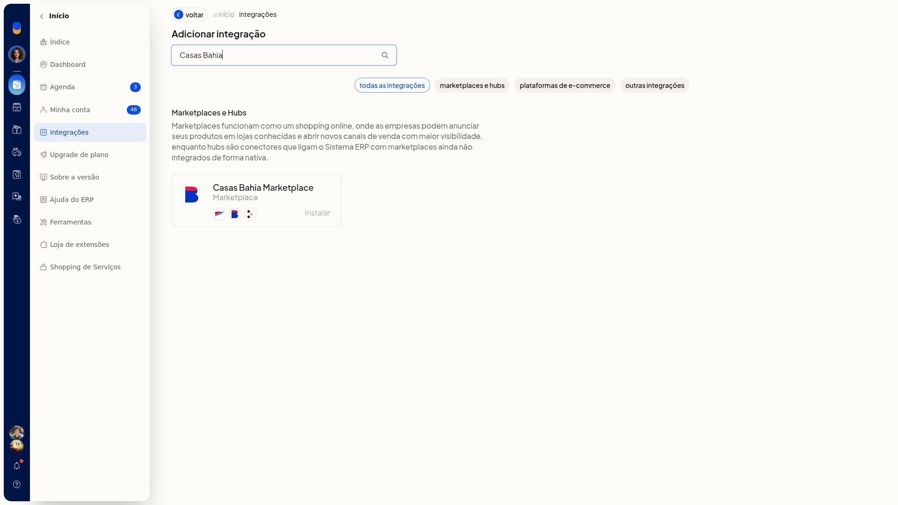
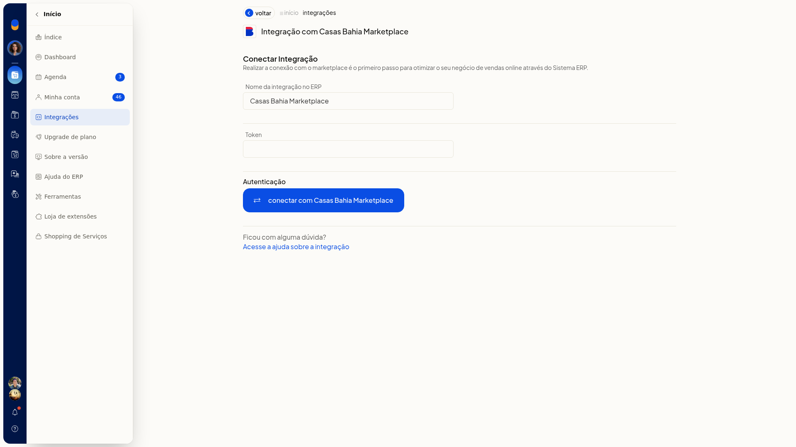
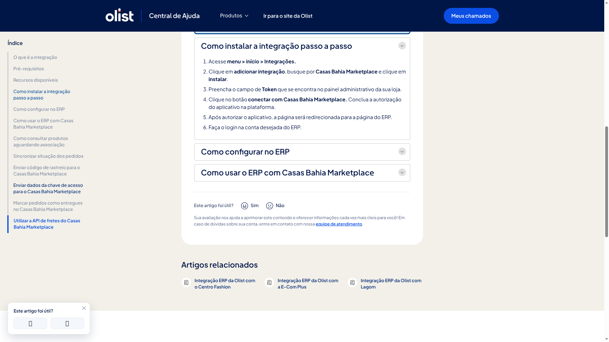
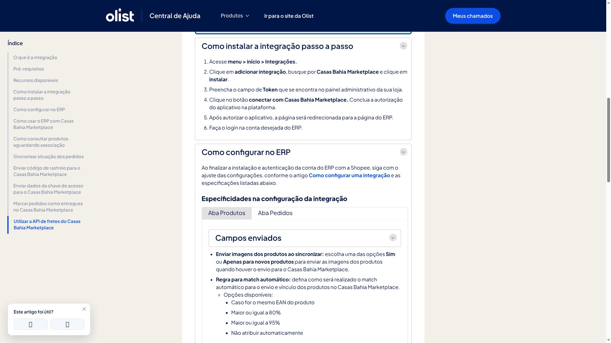
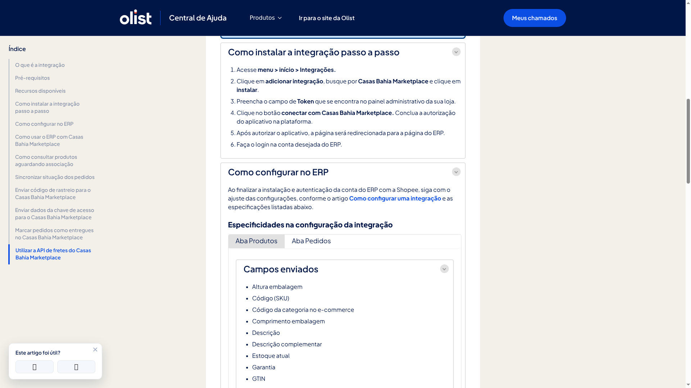
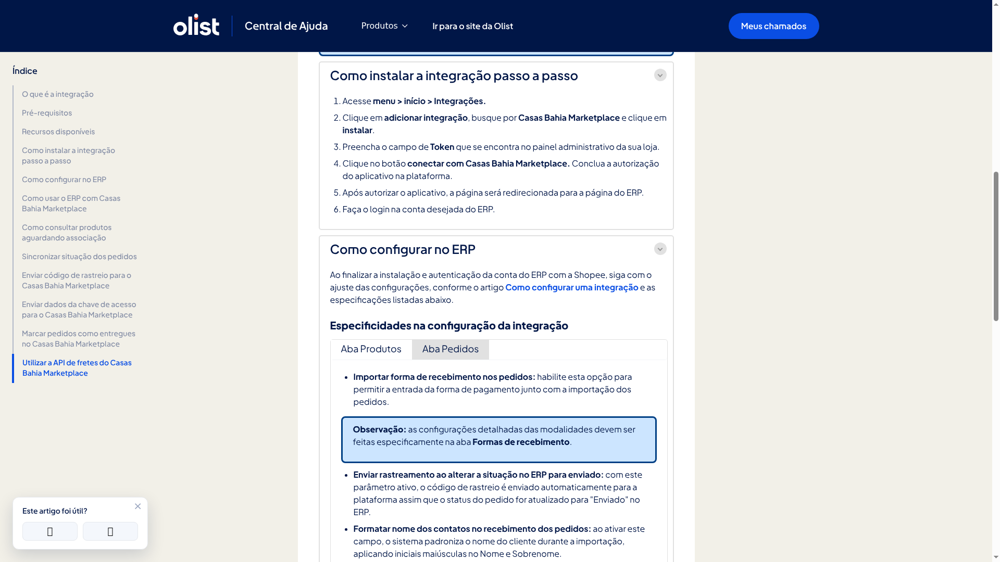

Integração com a Casas Bahia
A integração Casas Bahia Marketplace conecta a loja desse marketplace ao ERP da Olist. Você instala o canal, define o nome da integração e informa o token para autenticar a conta.
Depois da conexão, a integração recebe pedidos e produtos e envia produtos, estoque e preços. A ajuda da tela também descreve ajustes nas abas Produtos e Pedidos.
Pré-requisitos
- Cadastro na Casas Bahia Marketplace.
- Token obtido no painel administrativo da loja.
Se já houver outra integradora, a ajuda da integração orienta estes passos antes de conectar:
- Solicite o Client ID por chamado de suporte.
- Peça à Casas Bahia Marketplace a revogação do token antigo e a habilitação apenas do token do ERP.
- Solicite também usuário e senha. Esses dados não aparecem na tela de conexão.
Importante
- Na tela de conexão, os únicos campos são Nome da integração no ERP e Token. Nenhum dos dois é obrigatório.
- A informação de Dias para preparação é enviada apenas para a categoria móveis. Nas demais categorias, é enviada a soma de dias para preparação e prazo de frete.
Instruções
- Acesse Início > Integrações.
- Clique em Adicionar integração e localize o card Casas Bahia Marketplace, do tipo Marketplace, com os ícones Extra, Casas Bahia e Ponto.

- Clique em instalar.

- Em Nome da integração no ERP, mantenha ou altere o nome. O valor inicial é Casas Bahia Marketplace.
- Em Token, informe o token do painel administrativo da loja.
- Clique em conectar com Casas Bahia Marketplace. Conclua a autorização do aplicativo na plataforma, aguarde o retorno ao ERP e entre na conta desejada. A tela fica preenchida e pronta para autenticar a loja.

Informações adicionais
Recursos da integração
A ajuda marca estes recursos:
- receber pedidos
- receber produtos
- enviar produtos
- enviar estoque
- enviar preços
- sincronizar situação e OMS
Ajustes da aba Produtos
Na tela de conexão, abra o link Acesse a ajuda sobre a integração, em Ficou com alguma dúvida?. Em Como configurar no ERP, a aba Produtos traz:
- Enviar imagens dos produtos ao sincronizar, com as opções Sim ou Apenas para novos produtos
- Regra para match automático, com as opções Caso for o mesmo EAN do produto, Maior ou igual a 80%, Maior ou igual a 95% e Não atribuir automaticamente

Campos enviados, na mesma aba, lista:
- altura embalagem
- código (SKU)
- código da categoria no e-commerce
- comprimento embalagem
- descrição
- descrição complementar
- estoque atual
- garantia
- GTIN
- imagens
- largura embalagem
- marca
- peso bruto
- preço de venda
- preço promocional
- variações

A ajuda também descreve Enviar dias para preparação ao sincronizar. O campo Dias para preparação fica no cadastro do produto, na aba Dados gerais, seção Estoque, e pode ser alimentado por planilha.
Ajustes da aba Pedidos
A aba Pedidos da ajuda descreve:
- Importar forma de recebimento nos pedidos, com o detalhe das modalidades na aba Formas de recebimento
- Enviar rastreamento ao alterar a situação no ERP para enviado
- Formatar nome dos contatos no recebimento dos pedidos
- Tipo de impressão de etiqueta, com PDF ou ZPL
